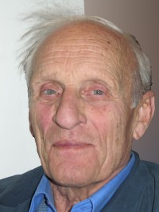

Hans Gulbrandsen Sørlien
M, #91278, f. 2 februar 1841
Biografi
| Sist redigert |
12 oktober 2020 00:00:00 |
Kjersti Larsdatter Guriløkken
K, #91279, f. 17 mai 1841, d. 21 februar 1921
Biografi
Kjersti Larsdatter Guriløkken ble født den 17 mai 1841 på/i Vågå, Oppland. Hun giftet seg med
Hans Gulbrandsen Sørlien. Hun døde den 21 februar 1921 på/i Lalm, Vågå, Oppland.
Kjersti Larsdatter Guriløkken was also known as Kjersti Sørlien.
| Sist redigert |
12 oktober 2020 00:00:00 |
Mari Hansdatter Sørlien
K, #91280, f. 22 februar 1866, d. 12 april 1957
Foreldre
Biografi
Mari Hansdatter Sørlien ble født den 22 februar 1866 på/i Vågå, Oppland. Hun giftet seg med
Per Johannessen Skjellum. Hun døde den 12 april 1957 på/i Vågå, Oppland. Hun ble gravlagt på/i Vågå kirkegård, Vågå, Oppland.
Mari Hansdatter Sørlien was also known as Mari Skjellum.
| Sist redigert |
12 oktober 2020 00:00:00 |
Per Johannessen Skjellum
M, #91281, f. 7 april 1877, d. 2 mars 1952
Biografi
Per Johannessen Skjellum ble født den 7 april 1877 på/i Randsverk, Vågå, Oppland. Han giftet seg med
Mari Hansdatter Sørlien. Han døde den 2 mars 1952 på/i Vågå, Oppland. Han ble gravlagt på/i Vågå kirkegård, Vågå, Oppland.
| Sist redigert |
12 oktober 2020 00:00:00 |
Hans Persen Skjellum
M, #91282, f. 19 juli 1900, d. 31 mai 1969
Foreldre
Familie: Borghild Johansen (f. 11 mars 1912, d. 14 februar 2000)
| Datter | Anne Marie Skjellum+ (f. 6 mai 1937) |
Biografi
Hans Persen Skjellum ble født den 19 juli 1900 på/i Vågå, Oppland. Han giftet seg med
Borghild Johansen den 4 april 1935 på/i Vågå, Oppland. Han døde den 31 mai 1969 på/i Vågå, Oppland. Han ble gravlagt på/i Vågå kirkegård, Vågå, Oppland.
| Sist redigert |
12 oktober 2020 00:00:00 |
Borghild Johansen
K, #91283, f. 11 mars 1912, d. 14 februar 2000
Familie: Hans Persen Skjellum (f. 19 juli 1900, d. 31 mai 1969)
| Datter | Anne Marie Skjellum+ (f. 6 mai 1937) |
Biografi
Borghild Johansen ble født den 11 mars 1912 på/i Vågå, Oppland. Hun giftet seg med
Hans Persen Skjellum den 4 april 1935 på/i Vågå, Oppland. Hun døde den 14 februar 2000 på/i Vågå, Oppland. Hun ble gravlagt på/i Vågå kirkegård, Vågå, Oppland.
Borghild Johansen was also known as Borghild Skjellum.
| Sist redigert |
12 oktober 2020 00:00:00 |
Kjell Arild Moen
M, #91285, f. 15 juni 1934, d. 16 juni 2020
Familie: Anne Marie Skjellum (f. 6 mai 1937)
| Sønn | Geir Arild Moen (f. 31 juli 1958) |
| Datter | Veslemøy Moen (f. 15 august 1961) |

Kjell Arild Moen - 1934-2020
Biografi
Kjell Arild Moen ble født den 15 juni 1934. Han giftet seg med Anne Marie Skjellum. Han døde den 16 juni 2020 på/i AHUS, Lørenskog, Akershus. Han ble gravlagt den 25 juni 2020 på/i Stalsberghagen gravlund, Skedsmo, Akershus.
Kjell Arild Moen bodde på/i Lillestrøm, Skedsmo, Akershus.
| Sist redigert |
26 juli 2025 16:09:56 |
Willy Larsen
M, #91290, f. 17 mai 1929, d. 15 august 2009
Familie: Else Karin (f. 31 desember 1931)
| Sønn | Pål-Willy Larsen (f. 6 april 1963) |
Biografi
Willy Larsen ble født den 17 mai 1929. Han giftet seg med Else Karin. Han døde den 15 august 2009. Han ble gravlagt på/i Stalsberghagen gravlund, Skedsmo, Akershus.
Willy Larsen drev bakeri og conditori Lillestrøm, Skedsmo, Akershus.
| Sist redigert |
18 juli 2022 17:52:53 |
Martine Nilsdatter
K, #91298, f. 7 februar 1846, d. 29 november 1928
Foreldre
Biografi
Martine Nilsdatter ble født den 7 februar 1846 på/i Svelvik, Vestfold. Hun giftet seg med
Einar Olaus Iversen den 15 oktober 1869 på/i Svelvik, Vestfold. Hun døde den 29 november 1928 på/i Chicago, Cook County, Illinois, USA. Hun ble gravlagt den 3 desember 1928 på/i Mount Olive Cemetery, Chicago, Cook County, Illinois, USA.
Martine Nilsdatter was also known as Martine Iversen. Hun ble døpt den 13 april 1846 på/i Strømmen prestegjeld, Vestfold.
| Sist redigert |
19 april 2025 14:41:14 |
Gunhild Sørine Aslesdatter
K, #91299, f. 1812
Biografi
Gunhild Sørine Aslesdatter ble født i 1812 på/i Strømmen prestegjeld, Vestfold.
| Sist redigert |
18 oktober 2020 00:00:00 |
Hilmar Neuman Leirvik
M, #91300, f. 6 september 1910, d. 24 april 1917
Foreldre
Biografi
Hilmar Neuman Leirvik ble født den 6 september 1910 på/i Skaftnesmoen; Foldereid, Nærøy, Nord-Trøndelag. Han døde den 24 april 1917 på/i Kolvereid, Nord-Trøndelag. Han ble gravlagt den 2 mai 1917 på/i Kolvereid, Nord-Trøndelag.
Hilmar Neuman Leirvik ble døpt den 25 oktober 1910 på/i Foldereid kirke, Nærøy, Nord-Trøndelag. Han bodde på/i Salsbruket; Kolvereid, Nærøy, Nord-Trøndelag.
| Sist redigert |
19 oktober 2020 00:00:00 |
| Slektskap | 8-menning 1 gang forskjøvet til Håkon Wahl |
{kind=link}